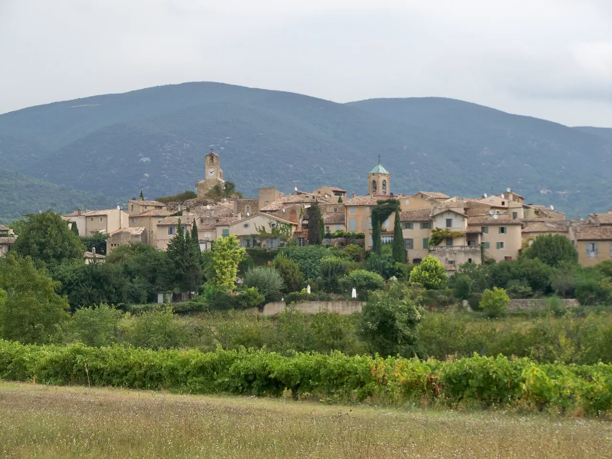

Lourmarin

| 지역 | Luberon |
|---|---|
| 등급 | Must |
| 언제 | Day 16 · 9/13시간표 기준 |
| 상세 | 챕터 본문에서 보기 |
참고
오프라인입니다. 위키백과와 지도 링크는 연결되면 다시 동작합니다.
무엇인가 — 카뮈가 익명을 찾아온 마을
카뮈는 새 스승 장 그르니에를 만났는데, 그르니에가 1930–31년에 로랑비베르 재단(뤼르마랭 성)의 입주자였다. 그의 말을 통해 카뮈는 프로방스와 뤼르마랭을 알게 됐다. 마을 묘사에 끌린 그는 뒤늦게 정착했고, 자주 찾아가던 친구 르네 샤르가 권한 것도 계기였다.
카뮈는 조용함과 익명성을 찾아 뤼르마랭에 왔다. 알아보는 사람을 피하려고 'M. 테라스'라는 가명을 썼다.
그가 시간을 보내던 레스토랑 올리에는 지금도 영업하고, 신문을 읽던 카페 드 로르모도 여전히 있다.
무덤 — 크기가 곧 메시지다
축구를 좋아해 뤼르마랭 청소년 축구단에 유니폼을 기증하기까지 했다. 대장장이든 마을 골동품상이든 가리지 않고 어울리는 소박함으로 주민들을 사로잡았다.
1913년 알제리에서 태어나 1960년 프랑스 마을 빌블르뱅의 교통사고로 46세에 죽었다. 사고 2년 전에 뤼르마랭에 정착했다. 친구 미셸 갈리마르도 같은 사고로 목숨을 잃었다.
프랑스 문화에서의 위상에도 불구하고 카뮈의 무덤은 소박한 작은 돌이다. 단순하게 새겨졌고, 땅에 묻히듯 낮으며, 풀과 로즈메리에 거의 덮여 있다.
글자를 거의 읽을 수 없다. 뤼르마랭 묘지의 앞쪽 구역에 있다. 들어가서 왼쪽 길로 갔다가 오른쪽으로 꺾으면, 길 거의 끝 오른편에 있다.
찾기 어렵다는 것을 알고 가라 표지판이 없다. 위 경로를 그대로 따르는 편이 빠르다. 무덤의 소박함에 실망하는 사람이 있는데, 그의 글을 읽고 아껴 온 사람에게는 이 검소함이 오히려 정확하고 뭉클하다. 낮은 비석, 식물에 덮인 상태, 방문자들이 남긴 글씨 적힌 돌들 — 이것이 이 무덤의 형태다.
같은 묘지에 앙리 보스코도 있다 소설가 앙리 보스코를 비롯해 여러 작가가 함께 묻혀 있다.
Château de Lourmarin
프로방스 최초의 르네상스 성이다. 카뮈가 즐겨 거닐던 곳이기도 하다.
성 뒤편 올리브밭을 보라 사람이 훨씬 적은 성 뒤편의 올리브밭을 권한다. 자유롭게 거닐며 성의 다른 면을 볼 수 있고, 당시 모습 그대로의 프로방스식 카바농도 있다.
L’Isle 선택 대안과 이어지는 실
카뮈가 자주 찾아가던 친구 르네 샤르는 시인이고, 리슬쉬르라소르그가 그의 출생지다.
L’Isle-sur-la-Sorgue를 별도 대안으로 고르면 두 작가의 우정이 이어진다. 새 기본 일정에는 포함하지 않는다.
실용
| 항목 | 값 |
|---|---|
| 묘지 | 무료 · 마을 외곽 · 주차장에서 도보 |
| 성 | 유료 요금·운영 재확인 |
| 시장 | 일요일에는 없다. 금요일 오전 · 화요일 저녁(4–10월) |
| 체류 | 60–90분 |
✓ 개최 확인 — Lourmarin des Carnets · 9e Salon du Carnet de Voyage 는 2026년 9월 12–13일에 열린다. 장소는 La Fruitière Numérique(Avenue du 8 Mai). 카르네티스트 45명, 워크숍·강연·상영. Day 16(9/13)이 마지막 날이다. 출처: lourmarindescarnets.fr · lourmarin.com · 뤼브롱 지역자연공원. 시각·입장료는 2026-08 확인 · 출발 전 재확인